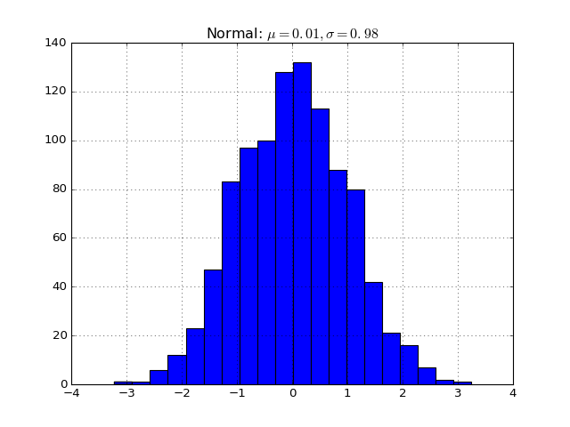

pylayers.util.pyutil.foo¶
- pylayers.util.pyutil.foo(var1, var2, long_var_name='hi')[source]¶
A one-line summary that does not use variable names or the function name.
Several sentences providing an extended description. Refer to variables using back-ticks, e.g. var.
Parameters: var1 : array_like
Array_like means all those objects – lists, nested lists, etc. – that can be converted to an array. We can also refer to variables like var1.
var2 : int
The type above can either refer to an actual Python type (e.g. int), or describe the type of the variable in more detail, e.g. (N,) ndarray or array_like.
Long_variable_name : {‘hi’, ‘ho’}, optional
Choices in brackets, default first when optional.
Returns: describe : type
Explanation
output : type
Explanation
tuple : type
Explanation
items : type
even more explaining
Raises: BadException :
Because you shouldn’t have done that.
See also
- otherfunc
- relationship (optional)
- newfunc
- Relationship (optional), which could be fairly long, in which case the line wraps here.
thirdfunc, fourthfunc, fifthfunc
Notes
Notes about the implementation algorithm (if needed).
This can have multiple paragraphs.
You may include some math:

And even use a greek symbol like
 inline.
inline.(Source code, png, hires.png, pdf)
References
Cite the relevant literature, e.g. [1]. You may also cite these references in the notes section above.
[1] O. McNoleg, “The integration of GIS, remote sensing, expert systems and adaptive co-kriging for environmental habitat modelling of the Highland Haggis using object-oriented, fuzzy-logic and neural-network techniques,” Computers & Geosciences, vol. 22, pp. 585-588, 1996. Examples
These are written in doctest format, and should illustrate how to use the function.
>>> a=[1,2,3]
{kind=link}
{kind=link}